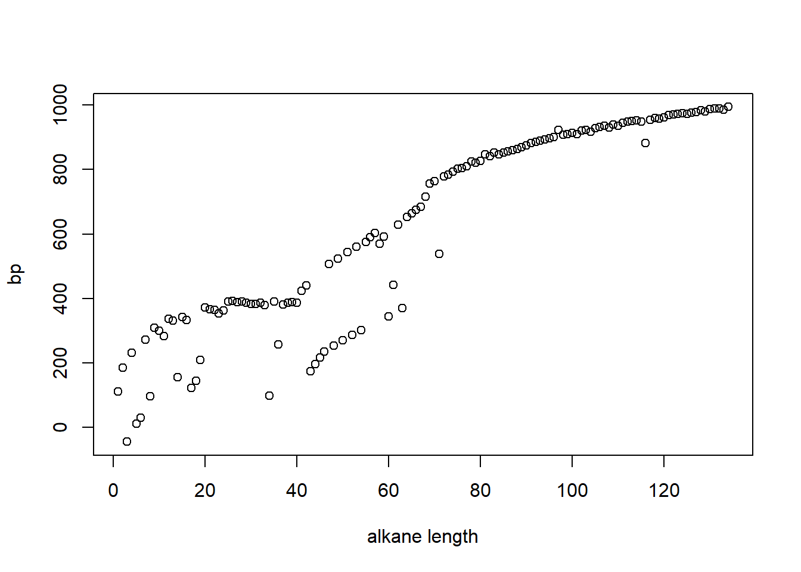
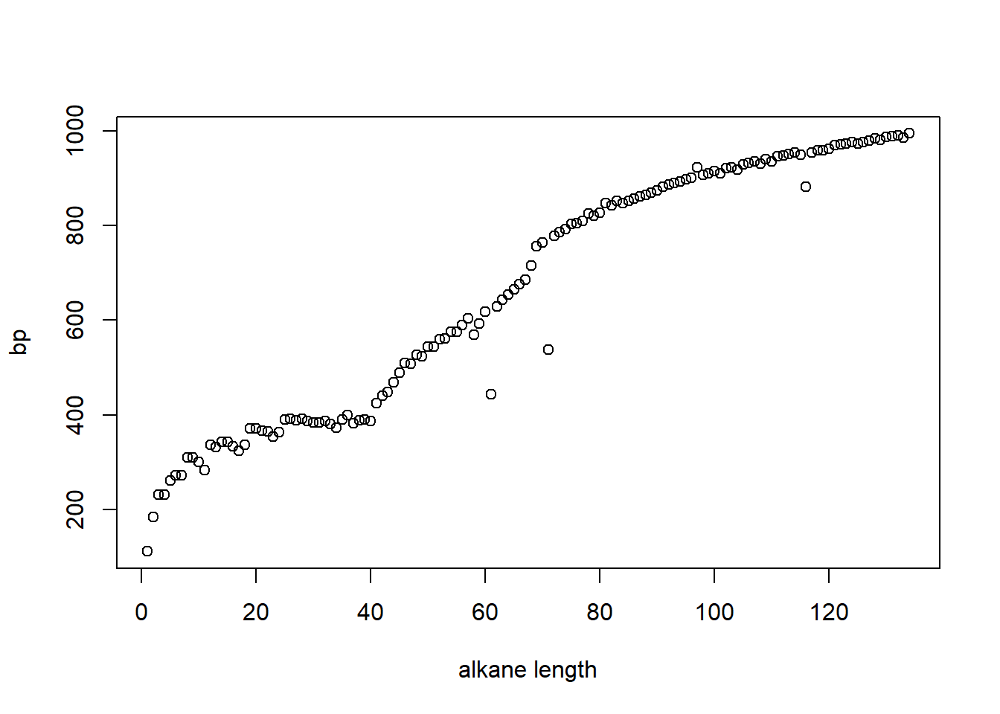
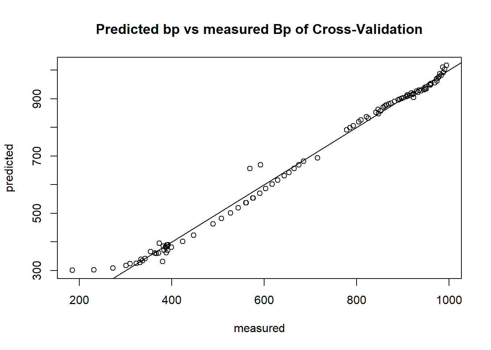
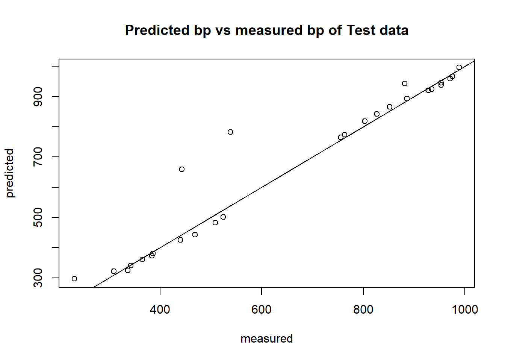

#Install packages if needed and load, or just load packages
#Required packages are WikidataQueryServiceR to obtain the data from wikidata
#rJAVA and rcdk are required to predict the pb based on the SMILES
#pls to make prediction model for bp
if (!requireNamespace("BiocManager", quietly = TRUE))
install.packages("BiocManager", ask = F)
# Insert all packages in requiredpackages
requiredpackages <-
c("WikidataQueryServiceR","rJava","rcdk","pls")
for (i in requiredpackages) {
if (!requireNamespace(i, quietly = TRUE))
BiocManager::install(i, ask = F, dependencies = c("Depends", "Imports"))
require(as.character(i), character.only = TRUE)
print(i)
}## [1] "WikidataQueryServiceR"
## [1] "rJava"
## [1] "rcdk"
## [1] "pls" library(WikidataQueryServiceR)
library(rJava)
library(rcdk)
library(pls)sparql_query <- 'SELECT DISTINCT ?comp ?compLabel ?bp ?bpUnitLabel ?SMILE WHERE {
?comp wdt:P31/wdt:P279* wd:Q41581 ;
p:P2102 [
ps:P2102 ?bp ;
psv:P2102/wikibase:quantityUnit ?bpUnit
] ;
wdt:P233 ?SMILE .
SERVICE wikibase:label { bd:serviceParam wikibase:language "[AUTO_LANGUAGE],en". }
}'
results = query_wikidata(sparql_query)## 134 rows were returned by WDQS#get index of colnumbers to make SMILES and bp selection
index_SMILES <- which(colnames(results)=="SMILE")
index_bp <- which(colnames(results) =="bp")
index_bpUnit <- which(colnames(results)=="bpUnitLabel")
#save the actual SMILES for later use
results_SMILES <- results[,index_SMILES]
#remove "(" and ")" to get a line of just C's
pattern<- "\\("
replacement <- ""
results[,5] <- gsub(pattern, replacement, results[,index_SMILES])
pattern<- "\\)"
results[,5] <- gsub(pattern, replacement, results[,index_SMILES])
#plot the amount of C's against bp to see releation and look for outlayers
plot(results[order(nchar(results[,index_SMILES])),index_bp], xlab="alkane length", ylab="bp")
#it looks from the plot that the units are not all equal#change Celsius to Kelvin
for(i in 1:nrow(results)){
if (results[i,index_bpUnit] == "degree Celsius"){
results[i,index_bp] <- results[i,index_bp]+273.15
results[i,index_bpUnit] <- "kelvin"
}
}
#Change Fahrenheit to Kelvin
for(i in 1:nrow(results)){
if (results[i,index_bpUnit] == "degree Fahrenheit"){
results[i,index_bp] <- ((results[i,index_bp]+ 459.67)*5/9)
results[i,index_bpUnit] <- "kelvin"
}
}#plot again with all units converted to kelvin
plot(results[order(nchar(results[,index_SMILES])),index_bp], xlab="alkane length", ylab="bp")
#reassign the orignal SMILES to the results
results[,index_SMILES] <- results_SMILES
#parse all the alkane smiles through the rcdk package to obtain all availlable information
results.rcdk <- parse.smiles(results[,index_SMILES])
#select descriptive categories
dc <- get.desc.categories()
#select names of discriptive topological caterogies)
dn <- get.desc.names(dc[3])
allDescs <- eval.desc(results.rcdk, dn)#create a df with bp and all features to use for plsr model
results.plsr <- cbind(results$bp, allDescs)
colnames(results.plsr)[1] <- 'bp'
#removing NAs and NANs
results.plsr <- results.plsr[ , -which(names(results.plsr) %in% c("VABC","geomShape"))]## 80% of the dataset size
smp_size <- floor(.80 * nrow(results.plsr))
## set the seed to get the same test and training sets when rerunning the code
set.seed(123)
train_ind <- sample(seq_len(nrow(results.plsr)), size = smp_size)
train <- results.plsr[train_ind, ]
test <- results.plsr[-train_ind, ]bp.plsr <- plsr(bp ~. , data=train, validation = "LOO", ncomp=4)#select column containing bp
bp_index <- which(colnames(test) == "bp")
Prediction <- RMSEP(bp.plsr, newdata=test)
#compare predicted bp's to actual bp's and look at the RMSEP
Prediction## (Intercept) 1 comps 2 comps 3 comps 4 comps
## 256.64 152.23 74.74 71.22 66.33#RMSEP is 46.8 at time of running#plot the predicted values against the measured values for the corss-validated values
predplot(bp.plsr, main = "Predicted bp vs measured Bp of Cross-Validation")
abline(a = 0, b = 1)
#it seems that the model predicts most of the boiling points pretty well except for the lower boiling points
#plotting the boiling points of the test set vs the predicted boiling points calculated by the pls model
predplot(bp.plsr, newdata=test, main = "Predicted bp vs measured bp of Test data")
abline(a = 0, b = 1)